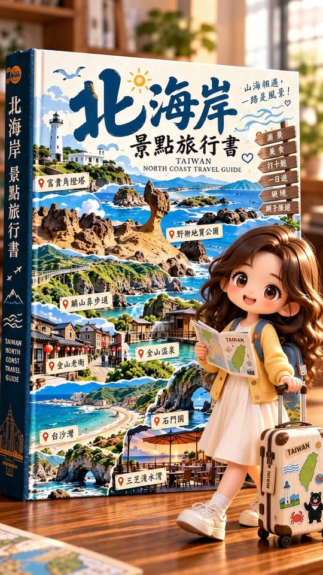

Facebook｜北海岸景點旅行書：以 ChatGPT 圖像＋Gemini 動畫打造旅遊微縮敘事

為什麼保存
這是一個很完整的「地點清單 → 單一視覺世界觀 → 短動畫」案例。它不只是把景點排成拼貼圖，而是把一本巨大直立的旅遊書當成舞台：固定一位手持導覽、拉著貼紙行李箱的 3D Q版旅人，隨著書頁翻開依序探索北海岸景點。這種敘事骨架可套用到校園導覽、地方創生、課程成果展或城市行程提案。
> 來源邊界：Facebook 公開 metadata 可見「圖片：ChatGPT」「動畫：Gemini」及原始 prompt 的前段；影片本身可見立體書、旅人與景點頁面。完整 prompt 在公開頁受登入牆與 metadata 長度限制而未取得，因此下列範本是依可見需求重寫的可用版本，不冒充為原作者完整原文。
影片可見的視覺敘事
- 封面為《北海岸景點旅行書》，旁有巨大立書與迷你旅人。
- 翻頁展示富貴角燈塔、野柳地質公園、麟山鼻步道、金山老街。
- 接續展示金山溫泉、白沙灣、石門洞、三芝淺水灣。
- 角色造型、黃色外套、地圖／導覽物與行李箱維持一致；場景則由書頁上的插畫式景點切換。
- 成品是約 10 秒的直式影片；互動與觀看數屬擷取時快照，不作固定成效比較。
可重用工作流
- **先定義旅遊編輯規格**：決定地區、6–8 個景點、角色、書名與畫面比例，先避免景點太多而每頁沒有辨識度。
- **以圖像模型製作關鍵視覺**：讓「角色、行李箱、書本材質、室內光線」成為跨頁固定元素；每頁只換景點與天候／時間。
- **檢查地標與文字**：AI 很容易把招牌、地名或地標造型畫錯；可先接受畫面中的文字僅是裝飾，再後製加入正確字樣。
- **以影片模型加入有限動作**：建議只要求翻頁、角色回頭、海浪／鳥群／蒸氣等小動態。動作越多，越容易有角色漂移、書頁變形與地標跳接。
- **最後加資訊層**：把實際交通、地址、營業資訊放在影片貼文、字幕或 QR code 導覽頁，不要依賴模型在畫面內生出可讀文字。
可重用圖像提示詞範本
```text
請生成一張直式 9:16 的高質感 3D Q版立體旅遊書場景。
主題地區：〔地區名稱〕
旅遊書書名：〔書名；建議後製加入精準文字〕
固定主角：一位可愛的迷你旅人，〔髮型／服裝／表情〕，手拿摺疊導覽地圖，身旁有一只貼滿〔地區／旅行〕貼紙的行李箱。
構圖：一本巨大、直立、已翻開的旅遊書置於溫暖明亮的室內木桌上；主角站在書本前方。左右書頁是有立體層次的景點插畫與模型場景。
本頁景點：〔景點 A〕與〔景點 B〕。
景點特徵：〔可辨識的地貌／建築／海岸／市集元素〕。
視覺規則：超精緻 3D stylized character、玩具模型般細節、電影級自然光、淺景深、材質真實、色彩溫暖、角色和行李箱外觀跨頁一致。
限制：不要水印、不要品牌標誌、不要難以辨識的假文字、不要多餘角色、不要變形手部、不要把地標混合成不合理的地理景觀。
```
動畫提示詞範本
```text
將這張直式 9:16 的立體旅遊書圖片製成 6–10 秒短動畫。
保留主角、書本、行李箱與所有景點的設計一致，不新增人物，不改變地標外形。
動作：鏡頭緩慢推近；書頁自然翻到下一組景點；主角微微轉頭查看地圖；海面有細緻波浪、鳥群輕微飛過，或溫泉有自然蒸氣。
風格：溫暖旅行感、平滑而克制的運鏡、細緻 3D 動畫。
限制：不要快速變形、不要角色臉部或服裝漂移、不要錯字字幕、不要突兀轉場、不要新增招牌與文字。
```
實務提醒
- 旅遊宣傳若涉及真實地標，先以人工核對景觀、地名與動線；生成圖不能代替地圖或安全資訊。
- 文字是圖像模型的高風險區。書名與景點名稱以後製疊字、字幕或互動頁提供，會比直接要求模型生字更可靠。
- 若把人物做成特定真人，應取得肖像使用同意；商業發表也應確認平台授權、音樂與地標／商標使用規範。
- 「ChatGPT 產圖、Gemini 動畫」是來源貼文的工具標示；實際模型入口、功能與可用性會依帳號、方案、地區與版本變動，正式製作前請以自己的帳號實測。